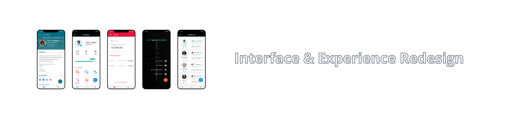

Enterprise Design
CoreHR undertook the considerable task of an entire Product & UI Redesign
with the aim of modernizing the front end and user experience.

Background
I joined the company as UX designer on the basis of having a knowledge of Google's Material Design,
which was to form the basic structure of the redesign.
Some key achievements
- Implemented a design process - This has helped
teams establish structure
with designers embedded into sprint teams.
- Improved usability & Accessibility across the
Application.
Very little usability or accessibility testing was done during development or design handoff.
We established automated accessibility testing and communicated the value of accessible design
accros the application
- Became more of a design evangelist - We worked to
bring the language of design to the fore of most discussions about any product.
We worked hard to develop a design language which can help the entire business.
Design consistency can help reduce the pressure on support teams, improve sales teams on stage
appearance and much more besides.
- Design Systems - We created, maintained and
implemented a design system for the entire application. Using atomic design principles we
brought
consistency and speed to the design and development of the application.
Design Process

We went through many iterations of improvised desighn process and came to a conclusion.
There is no one size fits all soloution, we settled on a simplified version of the below diagram.
The product suite is large, and we had to change the wheels while the car was on the road so to speak.
We were also working with a large number of dev and product teams.
Understanding Problems
Through detailed user research and speaking with users we gained many key insights which helped
define any given problem.
Recorded interviews with tools like dovetail help analyze what is said in the moment. We then
categorized feedback which helps group similar points of view.
Research Techniques
- Recorded Analysis - No matter how good your notes
are,
there is no substitute to listening back to hear what was said and interpret what was implied.
- Jobs To Be Done - A personal favourite of mine is
the Jobs To Be DoneUX principle. It basically defines what the key accomplishments
of a given task are to the user.
- User and Company Personas - We worked to create
sets of user and company
personas to keep the end user in mind for all teams.
- Iteration - Many key steps like wireframing,
journey mapping etc. have been omitted here for brevity but the main part for me is to iterate.
Speak to the customers again and again if they are willing. We have found this very useful
for improving pNPS score, experience
- Accessibility - Your might have to just email me to
ask me about how we handle accessibility, far too detailed for here!
Conclusions
This was a massive, multi year project, which is currently in its second iteration and live with
millions of users.
We monitor and gather in app feedback on a rolling basis and the overwhelming majority has been
positive.
It is of course not all positive but negative feedback is very useful to identify problems sets and
research target.
Some Examples
Workforce Managment

Analytics

Dashboards